369 Mart Account keeps the customer's own things safe in the backend: their profile, wishlist, reviews, referrals (inviting friends), scratch cards and their notifications. What a customer saves in the shop app or on the website stays saved, on every phone and computer they sign in from.
Staff look after these from four desks: Reviews, Referrals, Rewards and Notifications. Reviews go live straight away, but a review with a phone number, a link or a rude word waits for staff before anyone else can see it.
| Word | What it means |
|---|---|
| Waiting | A review the shop has not shown yet. Only its writer can see it. |
| Published | A review shoppers can see on the product page. |
| Hidden | A review staff took off the product page. It no longer counts towards the star rating. |
| Verified purchase | The customer really bought this product. The backend checks their own orders. |
| Referral code | A customer's own code (six letters or numbers, then 369) that friends type when they sign up. |
| 369 Wallet | The customer's money balance in the shop. Rewards are paid into it. |
| Scratch card | A small prize card the customer opens in the app after a delivery. |
| Pop-up | A message on the customer's phone or computer screen, even when the shop is closed. Only for customers who turned pop-ups on. |
Part 1 – Setting Up covers the review limits, the referral reward and the order pop-ups. Part 2 – Everyday Use walks through the four desks and what the customer sees. Part 3 – Keeping It Secure & In Order covers the full lists, who can do what, and privacy.
Done once by a Manager or Owner. Everything works with the built-in settings, so you can skip to Part 2 and come back later.
Open 369 Mart from the main menu. This module adds these screens:
The desks need Salesperson rights. Saving Order pop-ups and opening Settings need Website designer or Administrator (Settings) rights, which Managers and Owners have.
Open Store → Settings and click the Reviews tab. Set:
Press Save changes. Reset throws away what you changed since the last save.
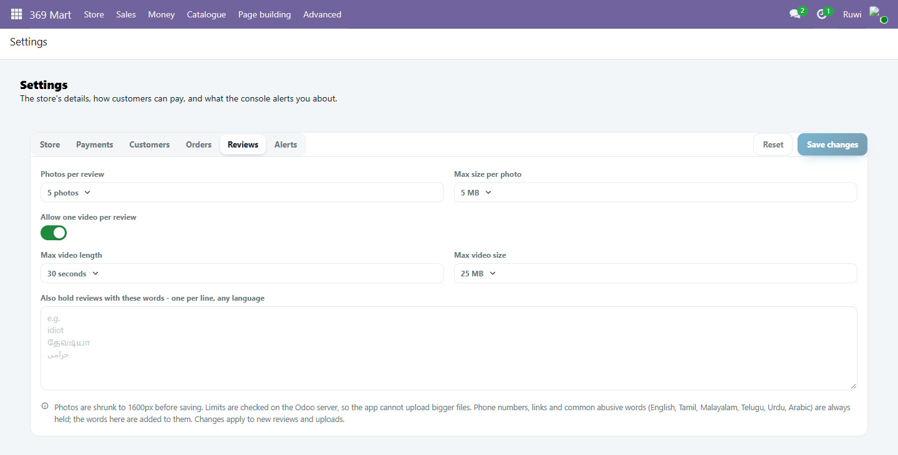
Open Sales → Referrals. The box under the tiles says One referral pays …. Press Change reward, type the amount in Reward and press Save. The default is 100 in the shop's currency.
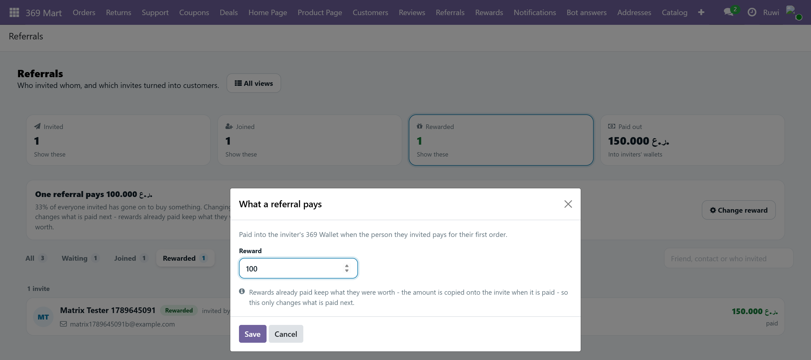
Open Store → Order pop-ups. Under Send a pop-up when an order is, each step has an on/off switch: Confirmed, Packed, Shipped, On the way, Delivered and Cancelled. All are on by default.
Under Its words you can write your own text for each step. Leave a box empty to keep the shop's own wording (shown in grey). Two short codes fill in details for you:
For example, %(ref)s is out for delivery. %(eta)s. A step that is switched off cannot have its words changed.
The four desks staff use. Each desk has tiles at the top: click a tile to show those records.
Open Sales → Reviews. The tiles show the Average rating and how many reviews are Waiting, Published and Hidden. The desk opens on Waiting, the reviews that need you. Use the search box (product, customer or text), Bought or not and With or without photos to narrow the list.
Above the list, Worst rated names the products with the lowest average (three reviews or more), and Top complaints · 30 days counts the complaint tags customers ticked, such as Damaged or Late delivery.
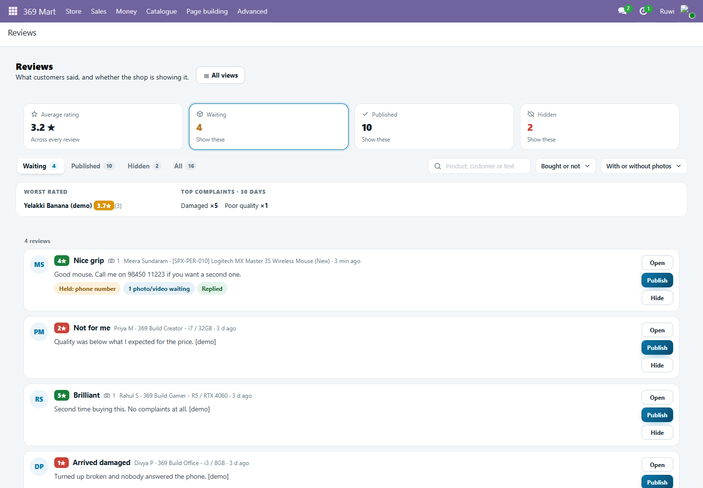
Each review shows coloured labels: Held: (why it waits), Hidden: (why staff hid it), photo/video waiting, Reported × (shopper reports), Ticket (a support ticket was opened for it) and Replied. Press Publish or Hide right in the list, or Open to see it in full.
A new review goes live at once, unless the automatic filter finds one of these:
If the writer edits a held review and removes the problem, it goes live by itself. If they edit a published review and add a problem, it goes back to Waiting.
Press Open. The window shows the stars, headline, text, why it is held, the tags, and how many shoppers marked it Reported or Helpful.
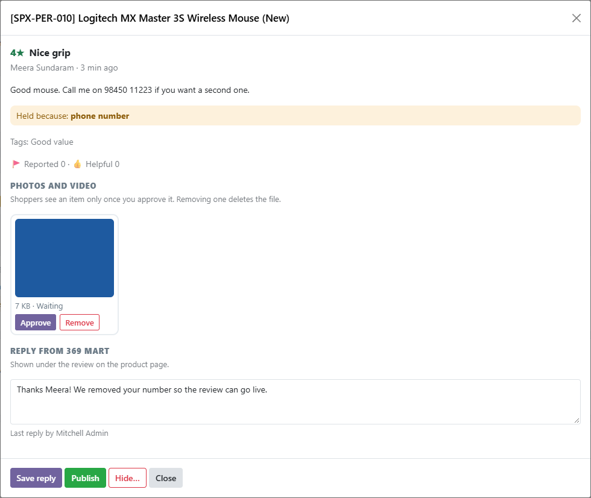
Publish puts the review on the product page and clears any held reason. Hide… asks Why: Abusive, Not about the product, Personal details, Spam or Other. Pick one and press Hide review. The reason stays with the review for the next person who looks.
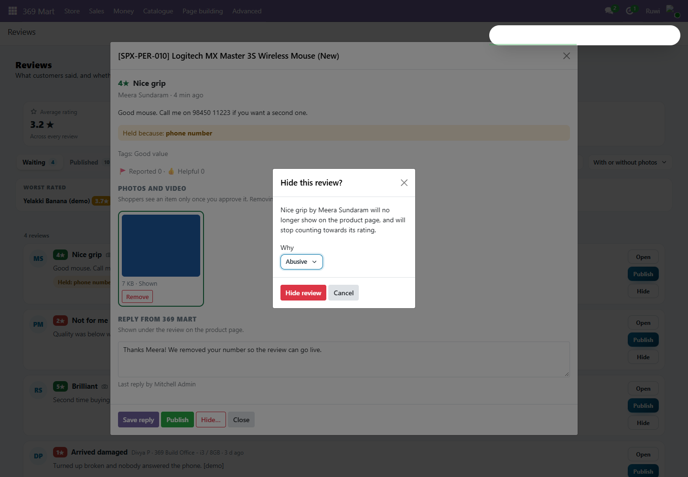
Open Sales → Referrals. Every customer has their own referral code. An invite moves through three steps, and the backend moves it, not the customer:
The tiles count Invited, Joined and Rewarded, and Paid out shows the total paid into inviters' wallets. Each row says who invited them (with the code), the friend's contact, and on the right either the amount paid, waiting on their first order, or not yet signed up.
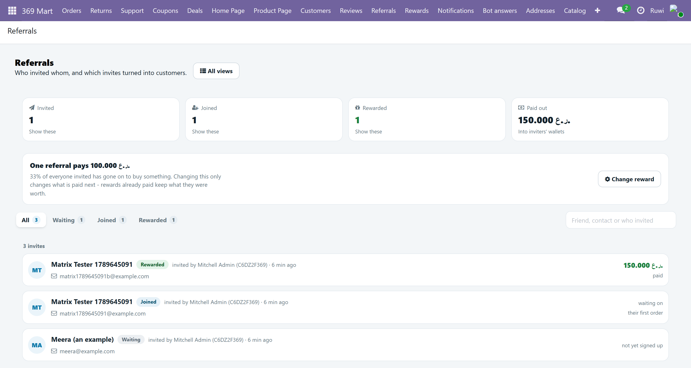
Each delivered order makes one scratch card for its customer. The prize is decided when the card is made, so it never changes later. The chances are fixed:
| Prize | How often |
|---|---|
| No prize | About 55 cards in every 100 ("Better luck next time"). |
| Wallet cash | About 35 in every 100. The amount is 10, 20, 25 or 50, each equally likely. |
| Coupon | About 10 in every 100: the first active coupon in the shop. If there is no active coupon, the card has no prize. |
Cash goes into the 369 Wallet when the customer opens (scratches) the card. Open Sales → Rewards to see the cards: tiles for Cards minted, Waiting to be opened, Paid out and Won nothing, and tabs for Cash won and Coupon won. Search by customer or order.
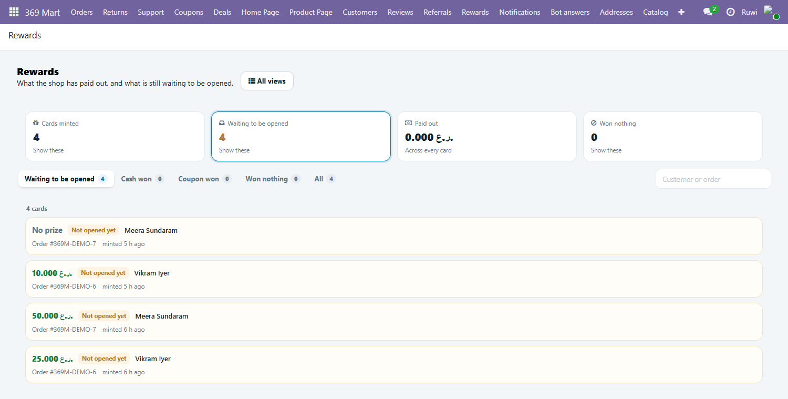
Open Store → Notifications. These are the messages every customer sees in their notification list, next to their own order updates. The tiles are Live now, Scheduled, Finished and Taken down. Two are installed to start with: Add money, get more and Invite a friend, both of you win.
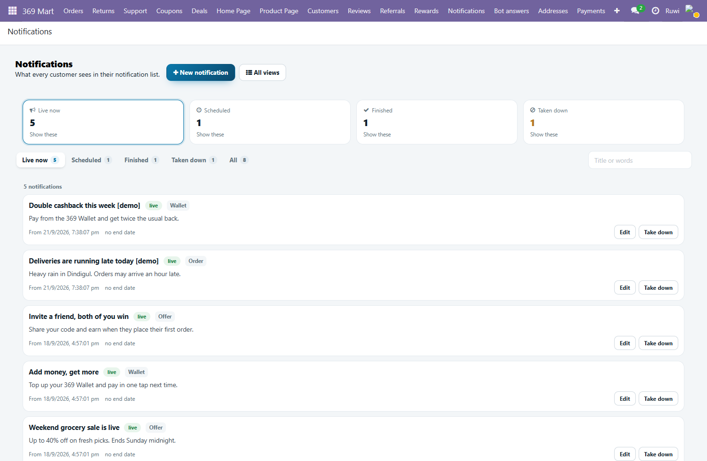
Press New notification (or Edit) and fill in:
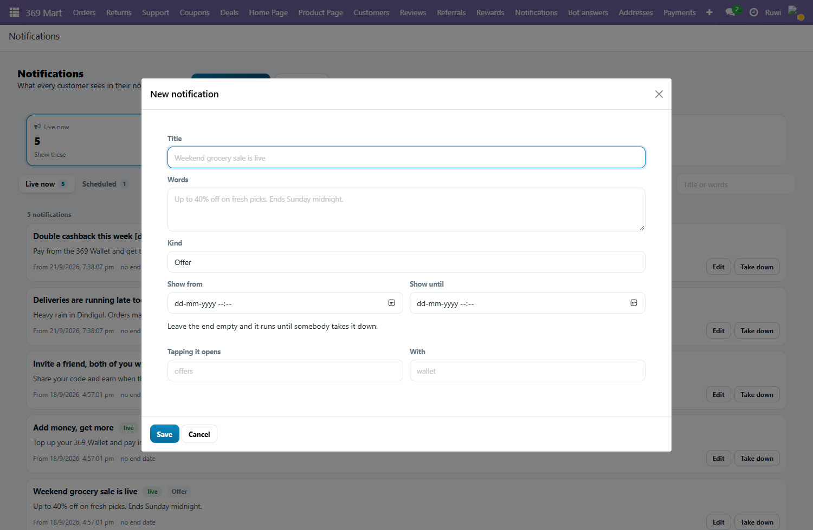
Each desk has an All views button (also under Advanced). The lists add grouping, filters and exporting, with summary tiles on top.
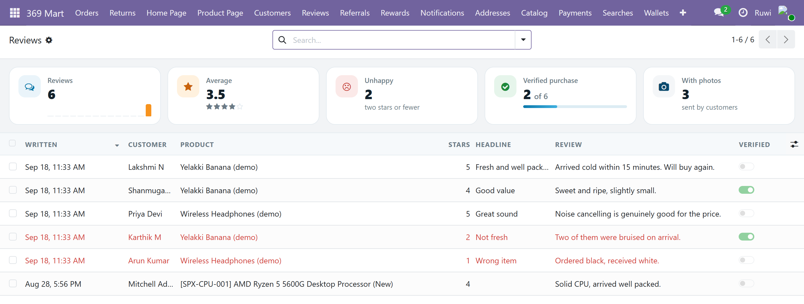
The reviews list has filters for Unhappy, Happy, Waiting, Published, Hidden, Verified purchase, With photos and Last 30 days. On a review's form, Shown is the only field staff may change; the rest is the customer's own words.
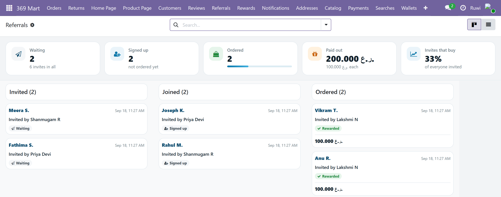
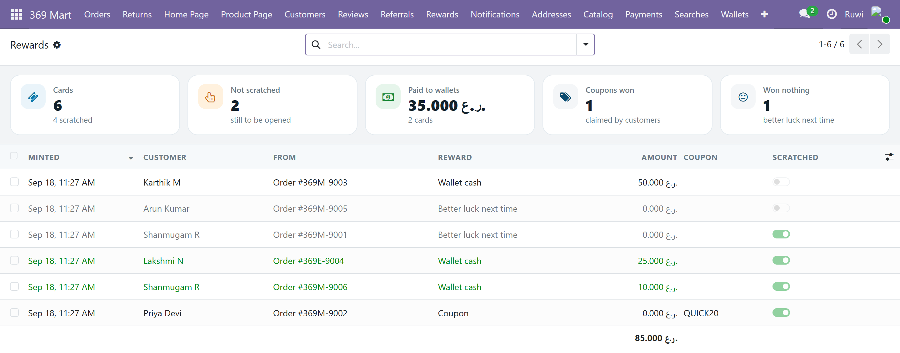
| Role | What they can do |
|---|---|
| Internal user | Read only. The desks are hidden. |
| Salesperson | All four desks: publish, hide and reply to reviews; change the referral reward; write and take down notifications. Rewards are read-only. They can open Order pop-ups but not save changes there. |
| Website designer (Manager) | Saving Order pop-ups and the Store → Settings screen, including the Reviews tab. Also the same screens in the staff console. |
| Administrator (Settings) (Owner) | Everything above. |
A review with a phone number, link or e-mail never goes public without a staff check. When you hide a review for personal details, pick Personal details as the reason. A removed photo or video is deleted from the backend, not just hidden. Pop-up messages are locked so only the customer's own browser can read them.
| State | Meaning | How to change it |
|---|---|---|
| Waiting | Held by the filter or by three reports. Only the writer sees it. | Publish or Hide… on the Reviews desk. |
| Published | On the product page and counted in the rating. | Hide…; or it returns to Waiting after three reports. |
| Hidden | Off the product page, not counted. Keeps its reason. | Publish. The writer's edits do not bring it back. |
| State | Meaning | How it changes |
|---|---|---|
| Invited / Waiting | Invite sent, friend not signed up. | Automatically, when the friend signs up with the code. |
| Joined | Friend signed up. | Automatically, at their first order. |
| Ordered / Rewarded | First order placed; reward paid to the inviter's wallet. | Final. |
| Live now | Notification showing to customers. | Ends at Show until, or Take down. |
| Scheduled | Starts at a later Show from. | Goes live by itself. |
| Finished | Its Show until has passed. | Edit the dates to run it again. |
| Taken down | Switched off by staff. | Put back. |
| What you see | What to do |
|---|---|
| A customer says their review is not showing | Find it on the Reviews desk under Waiting or Hidden. The Held: or Hidden: label says why. Publish it if it is fine. |
| A customer's photo is not on the product page | Open the review and press Approve under Photos and video. |
| A customer cannot upload a photo or video | It is bigger or longer than the limits in Store → Settings → Reviews, or videos are switched off there. |
| A referral reward was not paid | On the Referrals desk the invite must show Joined before the first order; a friend who signed up without the code is not linked. The inviter also needs a 369 Wallet. |
| A customer opened a cash card but has no money | Their account has no 369 Wallet yet. The card stays unopened, so once the wallet exists they can scratch it again. |
| A notification is not showing | Check its tile: Scheduled (start date later), Finished (end date passed) or Taken down. |
| No pop-ups arrive for an order step | Check that step's switch in Store → Order pop-ups, and that the customer turned pop-ups on. |
| The Settings menu is missing | It needs Website designer (Manager) or Administrator (Settings) rights. |